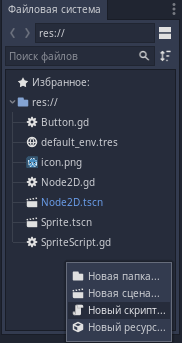
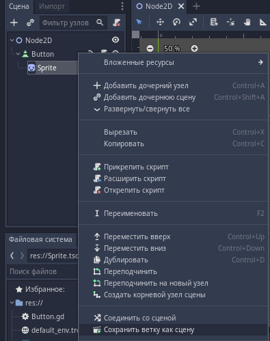
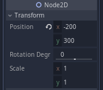

Классы, инициализация, наследование
Класс – шаблон для создания объектов обеспечивающий начальные значения состояний. Объект – это сущность способная сохранять своё состояние (информацию), и обеспечивающая набор операций для проверки или изменения этого состояния. Объект создаётся на основе какого-либо класса.Скорее всего для вас данные определения звучат как пустой звук. Давайте попробуем это исправить. Давайте, вы сделаете своё первое открытие:
- Телевизор и монитор;
- Легковая машина и грузовик;
- Книга, тетрадь, раскраска, блокнот;
- Окно, зеркало, аквариум.
Наверное, вы уже догадались – я вам дал объекты похожие по характеристикам, и вы, догадавшись об этом сами того не замечая распределили их по классам.
Так значит описание класса – это описание основания, фундамента, общих характеристик для группы объектов. Также в классе можно описать какие-то общие действия для всех объектов. Например, каждый враг. Будто он летучий, ползучий, прыгучий, ходячий и т.п. – это объект класса «Враг». По задумке он живой, а значит класс будет описывать их показатель здоровья – поле.
var health = 10
А так как при ударе врага он должен терять здоровье – классе можно описать метод потери здоровья.
func Damage(damage):
health -= damage
Теперь каждый объект, который мы создаём от этого класса, будет иметь эти поля и методы – это и есть свойства объектов класса, и принципы взаимодействия объектов класса с окружающей средой.
Теперь, когда мы говорим объекту «ты принадлежишь вот этому классу» его поведение соответствует поведению, описанному в предназначенном для него классе. В Godot ООП несколько отличается от привычных всем понятий. Давайте попробуем с ним поработать, чтобы понять его устройство.
Давайте попробуем реализовать какой-нибудь класс вручную. Мы уже знаем как создавать скрипт в доке файловой системы проекта – кликаем правой кнопкой мыши в пустом месте, и выбираем «Новый скрипт».
Назовём новый скрипт «human.gd», нажимаем кнопку создать, и двойным кликом мыши открываем наш созданный файл скрипта. Так как этот скрипт будет описывать наш класс «с нуля» мы можем удалить из него весь код который был автоматически создан. У каждого человека есть имя и возраст. Давайте опишем эти параметры.
var name
var years
Как видим, наши параметры пусты. У нас получился безымянный человек который не жил. Нам необходимо определить его имя и возраст. Если мы присвоим им какие-то значения, например:
var name = «Вася»
var years = 20
То все люди, которых мы создадим, будут 20-летними Васями. Почему так? Дело в том, что когда мы проинициализировали эти поля, мы задали им значение по умолчанию, и не можем в дальнейшем их изменять. Чтобы мы могли назвать каждого человека своим именем и дать ему свой возраст, необходимо описать конструктор. Для этого воспользуемся функцией _init(), которая отвечает за инициализацию объекта при создании.
Теперь мы можем задавать имя нашему человеку. В случае если имя или возраст будут неизвестны, мы можем задать значения по умолчанию:
func _init(FirstName=«Vasya», Year=15)
Теперь создавая объект без передачи параметров, таких как имя или возраст, по умолчанию будут подставлены значения по умолчанию которые мы поставили в описании функции. Да только как же пользоваться конструктором, и как нам создать объект на основе подобного класса?
Перед использованием данных их необходимо загрузить в память. Для этого есть load() и preload().
Давайте, находясь в каком-нибудь другом скрипте (НЕ В «human.gd»!) загрузим и вызовем наш класс. Делать мы это можем в контексте любой из функций, но в данный момент вызовем из функции _ready(). При этом, заметьте, при вызове функции load() не обязательно писать ей путь вручную – достаточно перетащить необходимый нам объект из дока файловой системы проекта!
Для наглядности на рисунке создаются два объекта. Как видите, не смотря на то что они используют один класс – это самостоятельные, отдельные объекты. Таковыми их делает оператор new() – он создаёт новые экземпляры класса, превращая их в самостоятельные объекты. То есть, всё что есть в Godot, будто узлы, сцены, и даже скрипты являются классовой иерархией, и расценивается движком как простые ресурсы. Мы так же можем наследовать данный класс. В файловой системе проекта кликаем правой кнопкой мыши на пустом месте, и выбираем «Новый скрипт», всё как при обычном создании скрипта, только в параметре «Наследует» нажимаем на иконку папки, и выбираем наш созданный ранее класс.
Открыв наш скрипт мы увидим, что первая строчка изменилась – теперь мы наследуем не узел Node2D, а наш ранее созданный скрипт (Рис. 30.2). Это значит что новый унаследованный класс будет вести себя точно так же как тот, от которого мы его унаследовали. Он будет иметь те же свойства и методы. Обратите внимание, при таком подходе изменяя наследника мы не изменяем родителя, однако изменения в родителе скажутся на наследнике!
Наш наследник унаследовал метод инициализации _init() от класса «human», а значит он будет вести себя так же. А что если он будет немного другим? Обычный человек, допустим, безобиден, а здесь мы создали воина – у него должен быть урон.
Тогда мы проинициализируем ему переменную damage, и опишем свой, новый _init() который должен быть у этого класса – так мы переопределяем какую-либо переменную, либо метод, однако остальная часть останется нетронутой, имя и возраст останутся на месте, унаследованные из другого класса.
Именно поэтому ООП на Godot отличается – мы создаём для себя префабрикат (предподготовленные данные), которые используем как шаблон для облегчения работы над игрой. Вам будет гораздо проще сделать штук 20 врагов, и раскидать их по уровню, нежели создавать каждого врага по отдельности. Давайте теперь проверим нашу теорию в действии, можем ли мы всё использовать как префабрикат.
Удалим наш созданный класс и его вызовы, и создадим класс на основе созданного нами спрайта. Правой кнопкой мыши щёлкаем на спрайте в доке дерева текущей сцены, и выбираем «Сохранить ветку как сцену». Называем как нам удобно (я назову «sprite.tscn») и сохраняем. Видим в файловой системе проекта наш сохранённый элемент.
Видим, что наш спрайт в доке дерева текущей сцены стал обладателем значка сцены – это значит что он преобразован в сцену, а значит мы его можем использовать как префабрикат. Щёлкните на него, и на доке инспектора осмотрите его позицию в мире. Нас интересуют хаарактеристики position.x и position.y (у меня это -200 и 300).
Это значит что когда мы будем создавать новый экемпляр класса – нам нужно будет ввести те же координаты, чтобы объект появился на том же самом месте. Теперь нам придумать как его клонировать. Давайте добавим узел «Button» (Кнопка), который будет дочерним к «Node2D», и прикрепим ему новый скрипт. Появившуюся кнопку разместите её в области видимости, где вам будет удобно. Выделив кнопку перейдите в док «Инспектор/Узел». Нам необходимо переключиться на «Узел», и присоединить реакцию на нажатие. Для этого находим событие button_down(), нажимаем на него правой кнопкой мыши, и выбираем «Присоединить». В открывшемся окне выберите так же нашё кнопку. Если не удаёстся завершить создание присоединение – нажмите на кнопку «Дополнительно», и окно присоединения раскроется полностью.
Возможно Godot предложит вам создать функцию для присоединения – если такое предложение поступило, воспользуйтесь им, и у вас всё получится! У вас сигнал должен быть проброшен от кнопки к функции скрипта кнопки, что должно отобразиться в доке «Инспектор/Узел», а в скрипте кнопки функция будет помечена зелёным значком. Всё что будет описано в области данной функции – будет выполняться при нажатии на кнопку, от которой мы провели сигнал.
Приступим к генерации наших «убегаек». Для этого будем пользоваться оператором preload(). Оператор preload() отличается тем, что позволяет загрузить ресурс во время загрузки сцены, и забирает необходимую память на протяжении всей работы сцены (на экране загрузки и до смены сцены – перехода на другой уровень). Оператор load() позволяет сэкономить время загрузки сцены, однако загружает ресурс во время работы сцены. Давайте предзагрузим наш спрайт:
func _on_Button_button_down():
var sprait = preload("res://Sprite.tscn").instance()
При вызове оператора preload() опять же не пишем путь – перетаскиваем сцену «Sprite.tscn» мышью из дока файловой системы проекта прямо в код, путь будет подставлен автоматически. Таким образом мы загрузили класс, который уже имеет такие параметры как картинка, вес, размер, поворот и т.д. На основе данного класса теперь необходимо создать объект который мы поместим на сцену – за это и отвечает instance() находящийся в куске кода выше. Фактически он делает то же самое что и оператор new(), только работает с составными типами данных. Давайте теперь зададим нашему объекту положение в мире, которое мы подсмотрели ранее у объекта «Sprite», и поместим его на сцену дочерним к нашей кнопке. За помещение на сцену в качестве дочернего объекта отвечает add_child(), где в качестве параметра указываем помещаемый объект.
Теперь можно запустить наш проект. Наш спрайтик всё так же убегает, но при нажатии на кнопку на месте где он был образуются новые, точно такие же «спрайтики-убегайки». Теперь мы можем запустить проект и потыкать наши спрайтики с кнопкой.